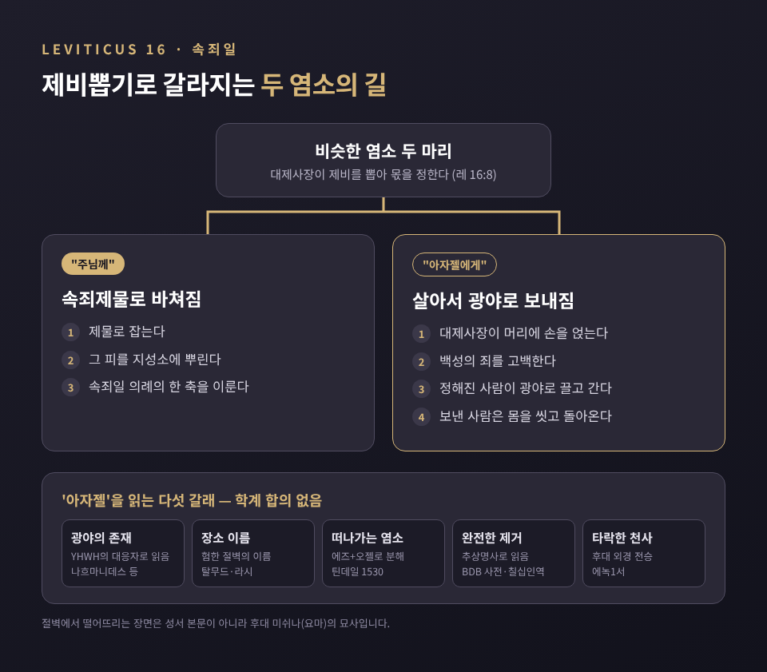
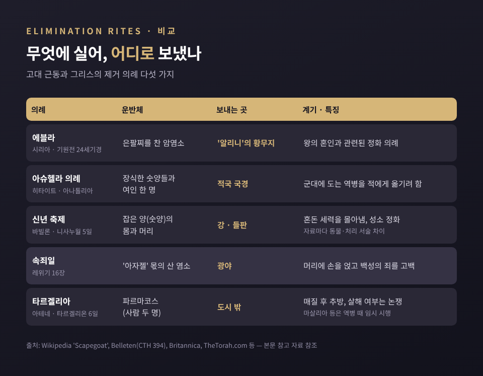
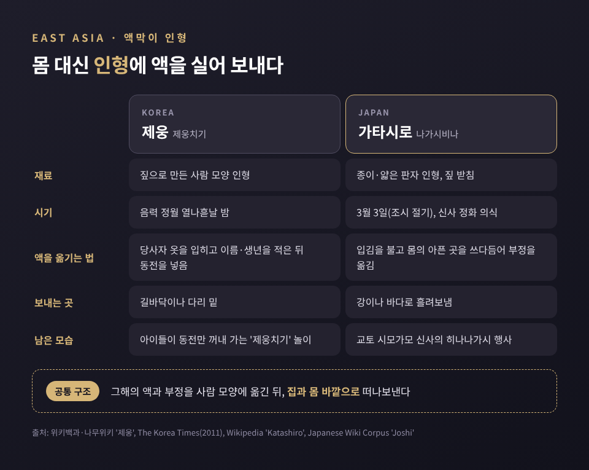
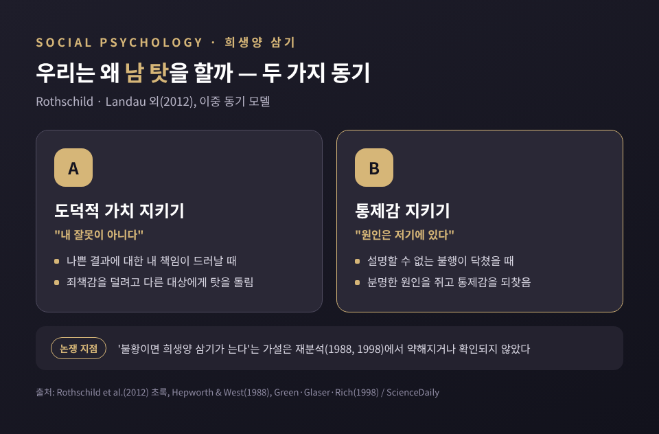

희생양 의례의 비교종교학 — 공동체는 왜 죄와 재앙을 밖으로 내보냈을까
이번 글에서는 '희생양 의례'를 비교종교학의 눈으로 살펴보려 합니다. 레위기의 두 염소, 그리스의 파르마코스, 히타이트의 숫양, 한국의 제웅과 일본의 나가시비나까지 차례로 짚어 봅니다. 마지막에는 프레이저와 지라르의 해석, 그리고 오늘날 '희생양 삼기'라는 말의 무게를 함께 생각해 보겠습니다.
세 줄 요약
- 고대 여러 사회는 죄·부정·역병을 짐승이나 사람, 인형에 '실어' 공동체 밖으로 내보내는 의례를 가졌습니다.
- 무엇을, 어디로 보내는지는 문화마다 달랐고, 해석도 학자마다 크게 엇갈립니다.
- 이 오래된 구조는 오늘날 '남 탓'의 심리를 이해하는 단서가 되지만, 단순한 공식으로 환원되지는 않습니다.
■ 레위기 16장, 제비로 갈린 두 염소
희생양(scapegoat)이라는 말의 뿌리는 히브리 성서 레위기 16장, 속죄일 의례에 있습니다.
대제사장은 비슷한 염소 두 마리를 놓고 제비를 뽑습니다. 하나는 "주님께", 다른 하나는 "아자젤에게" 돌아갑니다. 주님 몫의 염소는 속죄제물로 바쳐지고, 그 피는 지성소에 뿌려집니다. 다른 염소는 죽이지 않습니다. 대제사장이 그 머리에 손을 얹고 백성의 죄를 고백한 뒤, 정해진 사람이 광야로 끌고 갑니다. 염소를 보낸 사람은 몸을 씻고서야 진영으로 돌아옵니다.
후대 랍비 문헌인 미쉬나는 염소 뿔에 진홍색 실을 묶어 절벽에서 밀어 떨어뜨렸다고 전합니다. 다만 성서 본문은 '광야로 보낸다'고만 적고 있어, 이 장면은 후대의 관행으로 구분해 읽는 편이 안전합니다.

아자젤은 누구, 혹은 무엇인가
여기서 가장 오래된 논쟁이 시작됩니다. '아자젤'이 무엇을 가리키는지 학계의 합의는 아직 없습니다.
- 광야의 존재로 보는 입장 — 문맥상 한 염소가 YHWH에게 가듯 다른 염소는 아자젤이라는 '대응자'에게 간다는 독해입니다. 중세 주석가 나흐마니데스는 광야의 염소 형상 악령과 연결하되, 신이 아니라 '악의 의인화'로 보았습니다.
- 장소 이름으로 보는 입장 — 탈무드와 라시 등 다수 랍비는 염소를 떨어뜨린 험한 절벽의 이름으로 읽었습니다.
- '떠나가는 염소'로 보는 입장 — 단어를 '염소(에즈)+떠나다(오젤)'로 나눈 독해입니다. 1530년 윌리엄 틴데일이 이를 따라 "(e)scape goat"이라 옮겼고, 1611년 킹제임스 성경이 'scapegoat'를 채택했습니다.
- '완전한 제거'라는 추상어로 보는 입장 — 브라운-드라이버-브리그스 사전은 '제거하다' 어근의 강조형으로 풀이합니다. 칠십인역의 '보내 버리는 자'라는 번역도 이 독해와 통합니다.
- 후대의 타락천사 전승 — 외경 에녹1서에서 아자젤은 인간에게 무기와 치장을 가르친 타락한 천사로 등장합니다.
여러 신앙 전통이 이 염소에 저마다의 신학적 의미를 부여해 왔지만, 이 글은 어느 해석이 옳은지 판정하지 않습니다. 분명한 것은 우리가 쓰는 '희생양'이라는 단어가 이 해석 논쟁의 한 갈래에서 태어났다는 사실입니다.
■ 고대 근동 — 역병을 적국으로 돌려보내다
레위기의 염소는 홀로 서 있지 않습니다. 데이비드 라이트는 1987년 연구에서 짐승이 불결과 재앙을 실어 나르는 '제거 의례'가 고대 근동에 널리 퍼져 있었다고 정리했습니다.
가장 오래된 사례로 꼽히는 것은 시리아 에블라의 문서입니다. 기원전 24세기경으로 추정되는 두 의례 문서에는, 왕의 혼인과 관련된 정화 의식에서 은팔찌를 찬 암염소를 '알리니'의 황무지로 몰아냈다는 내용이 있습니다. 이탈리아 학자 이다 자텔리가 1998년 이를 레위기 의례의 기원 문제와 연결해 분석했습니다.
아나톨리아의 히타이트 문서는 더 극적입니다. '아슈헬라 의례'는 군대에 역병이 돌 때 행해졌습니다. 지휘관마다 숫양 한 마리를 내놓고, 흰색·빨간색·노란색 양털을 꼬아 목과 뿔에 감았습니다. 이튿날 지휘관들은 숫양에 손을 얹고 "신이시여, 사람의 살 대신 이 살진 짐승으로 만족하소서"라는 취지로 빌었습니다. 그리고 장식한 여인 한 명과 숫양들을 빵·맥주와 함께 적국 국경까지 데려가 남겨 두었습니다. 적이 이를 발견하면 역병이 그쪽으로 옮겨 가기를 바란 것입니다.
같은 구조는 '우하무와 의례', 당나귀를 적국 쪽으로 보내는 '단단쿠 의례'에서도 보입니다. 히타이트 연구자 재러드 밀러는 이를 회색지대로 봅니다. 자기 군대에는 정화였지만, 받는 쪽에는 흑마술이었을 테니까요.
바빌론 신년 축제 닷새째에도 비슷한 장면이 있습니다. 양을 잡아 그 몸은 강에, 머리는 들판으로 보내 공동체에서 혼돈의 세력을 몰아냈다는 설명이 있고, 사체로 성소 벽을 닦아낸 뒤 강에 던졌다는 정리도 있습니다. 자료마다 동물(양/숫양)과 처리 방식의 서술이 조금씩 다르다는 점은 함께 적어 둡니다.
■ 그리스의 파르마코스 — 사람을 내보낸 축제
고대 그리스에서는 짐승 대신 사람이 그 자리에 섰습니다.
아테네의 타르겔리아 축제는 타르겔리온 달 6~7일, 대략 5월 하순에 아폴론과 아르테미스를 기리며 열렸습니다. 첫날은 정화의 날이었습니다. '파르마코스'라 불린 두 사람, 흔히 추하다고 여겨진 남자와 여자(또는 남자 둘)가 뽑혔습니다. 이들은 잔치를 대접받고 시내를 돈 뒤, 푸른 가지로 맞으며 쫓겨났습니다.
기원전 6세기 시인 히포낙스는 무화과와 보리빵, 치즈를 먹인 뒤 무화과 가지와 해총으로 때려 내쫓는 관습을 노래했습니다. 마살리아(오늘날 마르세유)에서는 역병이 돌 때 가난한 자원자를 1년간 먹인 뒤 저주하며 내보냈다는 기록도 전합니다. 신화 속 희생양은 왕이나 왕자 같은 고귀한 인물이었지만, 실제 의례에는 범죄자·노예·빈민이 동원되었다는 점이 대조적입니다.
정말 죽였을까요. 일부 후대 자료는 돌로 쳐 죽이고 태웠다고 전합니다. 반면 얀 브레머 같은 학자들은 가장 이른 증거인 히포낙스가 매질·돌팔매·추방만 보여준다며 실제 살해에 의문을 제기합니다. 브리태니커 역시 '쫓아내거나 죽였다'고 가능성을 열어 두고 있습니다.

■ 동아시아 — 짚과 종이에 액을 실어
동아시아에서는 사람 대신 인형이 그 짐을 졌습니다.
한국의 '제웅'은 짚으로 만든 사람 모양 인형입니다. 처용이라고도 불렸는데, 신라 처용 설화에서 왔다는 설이 널리 알려져 있지만 어원은 확실하지 않습니다. 음력 정월 열나흗날 밤, 그해 나쁜 직성이 든 식구가 있으면 제웅에 그 사람의 옷을 입히고 이름과 생년을 적었습니다. 머리와 몸통에 동전을 넣어 길바닥이나 다리 밑에 버리면, 액이 다른 곳으로 옮겨 간다고 여겼습니다. 동네 아이들이 문밖에서 제웅을 달라고 외치고, 동전만 꺼낸 뒤 나머지를 길에 버리는 놀이를 '제웅치기'라 했습니다.
1891년 말 선교사 제임스 게일도 서울 북쪽에서 동전과 이름 쪽지가 든 짚 인형을 보았다고 기록했습니다. 인형을 받아 가는 일은 곧 그 집의 한 해 액운을 떠맡는 일로 여겨졌습니다.
일본에는 '가타시로', 또는 '히토가타'라 불리는 종이 인형이 있습니다. 신사의 정화 의식에서 인형에 입김을 불고 몸의 아픈 곳을 쓰다듬어 부정을 옮긴 뒤, 강이나 바다에 흘려보냅니다. 3월 3일 '조시' 절기에는 고대 중국의 물가 정화 풍습이 헤이안 시대에 전해져, 종이 인형을 물에 띄우는 '나가시비나'로 남았습니다. 오늘날 교토 시모가모 신사에서는 짚 받침에 인형을 실어 미타라시 강에 띄우는 행사가 이어지고 있습니다.

■ 프레이저의 『황금가지』 — 오류의 진화로 읽다
이 다양한 관습을 처음 하나로 묶으려 한 인물이 제임스 프레이저입니다. 1890년 초판 이후 증보를 거듭한 『황금가지』 제3판 가운데, 1913년에 나온 제9권이 바로 『희생양』입니다.
프레이저는 이것을 '악의 전이'라는 원리로 설명했습니다. 짐을 남의 등에 옮기듯 고통과 죄도 옮길 수 있다는 믿음은 "물리적인 것과 정신적인 것의 명백한 혼동"에서 나온 착오라는 것입니다. 그는 공동체가 때때로, 혹은 정기적으로 악을 몰아내는 사례를 세계 곳곳에서 수집해 나란히 늘어놓았습니다.
방대한 수집은 지금도 자료 창고로서 가치가 있지만, 비판도 만만치 않습니다. 비트겐슈타인은 프레이저가 다른 민족의 사제를 "오늘날 영국 교구 목사"처럼 상상한다고 꼬집었습니다. 의례는 잘못된 과학이 아니라 삶의 표현이며, 우리는 "인간의 삶이란 이런 것"이라고 기술할 수 있을 뿐이라는 반론입니다. 메리 더글러스는 1978년 인류학계에서 프레이저의 권위가 이미 무너졌다고 평가했고, 현지 조사 없는 '안락의자 인류학'이라는 별명도 따라다닙니다.
■ 르네 지라르 — 폭력을 잠재우는 '모두 대 하나'
20세기 후반, 희생양을 다시 학문의 중심으로 끌어올린 사람은 프랑스 출신 사상가 르네 지라르입니다. 『폭력과 성스러움』(1972), 『세상 설립 이래 감추어진 것들』(1978), 『희생양』(영역 1986)이 대표작입니다.
그의 출발점은 '모방 욕망'입니다. 사람은 남이 원하는 것을 따라 원하고, 같은 것을 원하다 보면 경쟁자가 됩니다. 모방이 번지면 서로의 차이가 지워지고, 공동체는 폭력이 폭력을 부르는 위기에 빠집니다. 이때 공동체는 한 사람에게 모든 탓을 몰아 그를 죽이거나 내쫓고, 거짓말처럼 평화를 되찾습니다. 희생자는 흔히 이방인이나 병자처럼 눈에 띄는 표지가 있고, 대신 복수해 줄 이가 없는 사람입니다. 평화가 온 뒤 그 희생자는 재앙의 원인이자 구원자로 거꾸로 신성시된다고 지라르는 봅니다. 의례는 이 최초의 사건을 대체물로 되풀이하는 장치라는 설명입니다.
지라르는 신화가 박해자의 관점에서 쓰인 반면, 성서는 희생자의 관점을 드러낸다고 주장했습니다. 흑사병을 유대인 탓으로 돌린 중세 시인 기욤 드 마쇼의 글을 '박해의 텍스트'로 분석한 대목은 특히 유명합니다.
비판 역시 여러 갈래입니다. - 너무 많이 설명한다 — 인간 문화 거의 전부를 하나의 기제로 풀려 하고, 문화의 기원은 검증할 수 없어 반증이 불가능하다는 지적입니다. - 증거의 성격 — 실증 자료보다 문학 작품과 고대 사회에 대한 추측에 기댄다는 비판입니다. - 해석의 편향 — 신화와 고전을 특정 종교 교리에 유리하게 읽는다는 비판, 그리고 정반대로 모든 종교를 탈신성화한다는 비판이 동시에 나옵니다. - 일반 이론 자체에 대한 의문 — 종교학자 조너선 Z. 스미스는 1987년 『폭력적 기원』 대담에서 폭력에 기반한 일반 이론이 가능하고 유용한지부터 따졌습니다.
앞서 본 사례들도 생각할 거리를 줍니다. 레위기의 산 염소는 본문상 죽지 않고, 히타이트 의례는 내부 갈등보다 바깥의 적을 향합니다. 이론과 구체적 의례 사이에는 여전히 간극이 있는 셈입니다.
■ 오늘날의 '희생양 삼기' — 남 탓의 두 가지 동기
예전에 희생양은 제단과 광야의 언어였습니다. 지금은 회의실과 뉴스 댓글의 언어입니다.
사회심리학에서 희생양 삼기는 잘못 없는 사람이나 집단에 탓을 돌리는 일입니다. 감정을 남에게 덧씌우는 '투사', 분노를 엉뚱한 대상에 쏟는 '전위'가 대표적 기제입니다.
경제가 어려우면 희생양 삼기가 늘어난다는 가설은 오래 논쟁거리였습니다. 1940년 호블랜드와 시어스는 1882~1930년 미국 남부의 목화 가격과 흑인 린치 건수 사이에 강한 음의 상관이 있다고 보고했습니다. 그러나 1988년 시계열 기법으로 다시 분석하자 상관은 원래보다 작아졌고, 1998년 그린 등의 연구는 1987~1995년 뉴욕의 증오범죄와 실업률 사이에서 유의한 연관을 찾지 못했습니다. 연구진은 불만을 특정 집단으로 향하게 만드는 정치 세력과 조직의 역할을 더 주목해야 한다고 보았습니다.
2012년 로스차일드와 란다우 등은 희생양 삼기의 동기를 둘로 나눴습니다.

하나는 내 책임에서 오는 죄책감을 덜기 위해서입니다. 다른 하나는 설명할 수 없는 불행 앞에서 '분명한 원인'을 손에 쥐어 통제감을 지키기 위해서입니다. 옛 의례가 재앙과 부정을 눈에 보이는 몸에 실어 내보냈던 것과, 묘하게 닮은 구조입니다.
정리하면 이렇습니다. 공동체는 감당하기 어려운 죄와 재앙에 모양을 입혀 밖으로 내보내며 다시 하나가 되려 했습니다. 그 방식은 염소였고, 숫양이었고, 사람이었고, 짚과 종이였습니다. 해석은 프레이저의 '착오'에서 지라르의 '집단 폭력'까지 넓게 갈리며, 어느 한쪽도 모든 사례를 다 설명하지는 못합니다.
"무엇을 내보내는가보다, 누구를 내보내는가를 물어야 한다."
옛 의례를 들여다보는 일이 오늘 우리 곁의 희생양을 알아보는 데 쓸모가 있느냐고 물으신다면, 저는 조심스럽게 그렇다고 답하겠습니다.
참고 자료
- New World Encyclopedia — Azazel
- Wikipedia — Scapegoat
- Noga Ayali-Darshan, The Scapegoat Ritual and Its Ancient Near Eastern Parallels (TheTorah.com, 2020)
- Britannica — scapegoat
- Britannica — pharmakos
- Britannica — Seasonal renewal in ancient Mesopotamia
- Wikipedia — Thargelia
- Todd M. Compton — The Pharmakos Ritual: Testimonia
- Belleten — Ašḫella Rituali (CTH 394)
- Jared L. Miller — Black Magic among the Hittites (2010, PDF)
- Zatelli — The Origin of the Biblical Scapegoat Ritual (VT 1998) 서지
- Michael S. Heiser — Leviticus 16 notes (PDF)
- Mental Floss — Why Do We Call People Blamed for Things Scapegoats?
- J. G. Frazer, The Golden Bough Vol. IX: The Scapegoat (1913), Project Gutenberg
- History of Anthropology Review — Remarks on Frazer's Golden Bough
- Internet Encyclopedia of Philosophy — René Girard
- Johns Hopkins University Press — The Scapegoat
- Critical Legal Thinking — Mimetic Desire & the Scapegoat (2023)
- Stanford University Press — Violent Origins (1987)
- Wikipedia — Scapegoating
- Hepworth & West (1988) — Lynchings and the Economy
- ScienceDaily (1998) — Economic Downturns Unrelated To Hate Crimes
- Rothschild, Landau et al. (2012) — A Dual-Motive Model of Scapegoating
- 위키백과 — 제웅
- 나무위키 — 제웅
- The Korea Times — One man's loss is another's gain (2011)
- Wikipedia — Katashiro
- Japanese Wiki Corpus — Joshi
- Japan Experience — The Hina Nagashi Festival